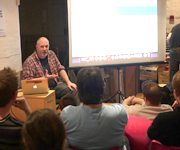
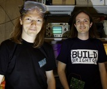
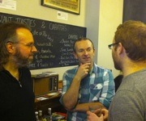

Bringing together the creative and digital communities of Brighton and Hove and the academic and student communities of local universities and colleges.
Why are you at college or university? Why are you an academic researcher? Because you have a passion about your chosen field of study. Brighton is full of passionate people. You could be talking to them.
Brighton has dozens of free groups and meetings, run by people who care about their subject. World-class expert speakers are talking at events right on your doorstep. You could be attending them.
It's always good to spend time with like-minded, friendly people at group meetings, or over a coffee or a pint. You could be part of the community.
Brighton is full of creative and technical talent, just like you, sharing their knowledge, collaborating and generating opportunities. You could be benefiting from these opportunities.

Async is a JavaScript meet up group with talks and coding sessions every two weeks. JavaScript is the true lingua franca of the web. It is probably the most widely deployed computer language, running in hundreds of millions of web browsers on desktops and mobile devices. For a student looking to move into the web software industry, learning JavaScript is essential.
The Brighton Animators Networking Group (BANG) provides an opportunity for animators to meet both online and offline and share knowledge. Past events and collaborations have included large-scale projections as part of the White Night festival, show and tell meetings, and business networking events.
The Brighton and Hove Python User Group is a collection of people interested in the Python programming language. Python is widely used in academia, thanks to its focus on readability and the existence of mathematical and scientific libraries like NumPy and SciPy. Recent talks have included material on high performance computing, artificial intelligence and natural language processing.

Build Brighton is a Hackspace, a volunteer-run communal workshop where like-minded people can geek out about electronics, technology, crafts, robotics, engineering, manufacturing and design. Reduced membership fees for students are offered, which will give you access to laser cutters, soldering irons, oscilloscopes, drills, saws and all manner of other equipment.
The Brighton Creative Writing Sessions are a series of fun, sociable writing workshops with a slight difference. They’re based around interesting, experimental themes that aim to jolt your creative streak into producing lots of new material in unexpected ways. The Sessions give you a supportive, playful studio atmosphere where you can try out new things.
An award-winning digitally creative user group. Some sessions are formal presentations, some are improvised workshops and some are just pure pandemonium, quite honestly. But all of them are great fun! dotBrighton also has a constant turn over of projects, from freeform collaborative animations to robust one-man applications.
Functional Brighton is a meetup group that aims to bring together people interested in functional programming. Functional programming languages and the theoretical mathematical framework they are rooted in have grown out of academia, but are increasingly finding use in industry to solve real-world problems.

A place for tech entrepreneurs and owners of growing businesses to meet investors and people that have done it before - over a cup of coffee. A great opportunity to talk to people about turning your academic research into a commercial product.
If any of the groups or events on this page interest you, the easiest way to get involved is to visit their website, find out when they are next holding a meeting, and go along. Many of the groups have Twitter accounts that you can follow or Google Groups you can join if you'd like to join the discussion.
Secondly, please forward the link to Brighton Brains to as many of your friends, fellow students and academic colleagues as you can. If you're a lecturer, tell all your students to visit the site. Post the link on Facebook and Twitter, and send it out to your departmental email lists.
Finally, If you know of any other groups that should be on this page, or have any suggestions for any other improvements to site, please don't hesitate to contact us.
If you run or attend a meetup, event or other community group in Brighton or the surrounding areas that you think should be on this site, please let us know. You can either email us with the details, or fork the project on GitHub and open a pull request (if you know how!)
Please promote Brighton Brains to other group members and ask them to pass it on to any friends that might be interested. If you have any suggestions for how we could improve the site, please let us know.